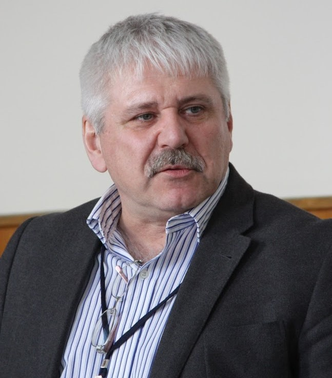
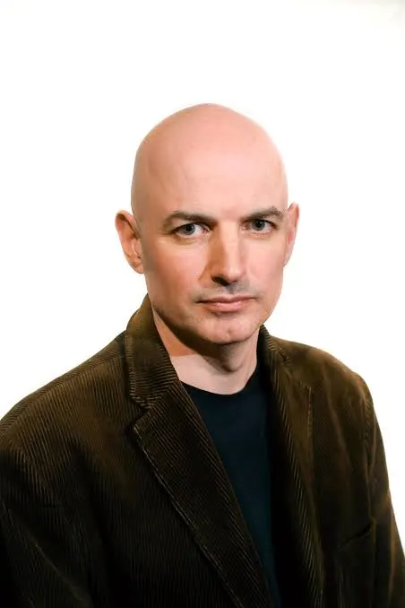
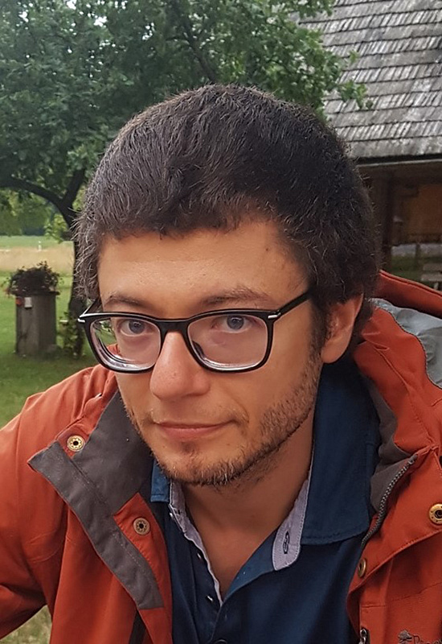

Пленарные докладчики ТМП 2015
Андрей Александрович КибрикАффилиация: ИЯз РАН / МГУ Текущая аффилиация: Директор Института языкознания РАН, профессор ОТиПЛ МГУ Научные интересы: языковое разнообразие, полевая лингвистика, язык и когнитивная система, функционалистская теория языка, дискурс, устная форма языка, мультимодальность, корпусная лингвистика, компьютерное моделирование, языковая политика. Профессиональная деятельность:
Исследовательские области: индейские языки, атабаскские языки, тюркские языки, кавказские языки, западноафриканские языки, русский жестовый язык глухих, русская грамматика. |
Атле ГрённАффилиация: University of Oslo Научные интересы: русская лингвистика, семантика, прагматика, теоретическая лингвистика. Биография: Атле Грённ (род. 1971) — профессор русской лингвистики в Университете Осло. Помимо академической деятельности, он известен как шахматный комментатор на норвежском телевидении (NRK с 2013 года) и автор шахматных книг для широкой аудитории. Профессиональная деятельность:
Публикации: Автор более 2000 шахматных колонок для крупных норвежских газет, а также научных работ по лингвистике. Книги: "Sjakken eller livet" (2016) и "Sjakkgeniene" (2018, в соавторстве с Хансом Олавом Лалумом). |
Джон Фредерик Бэйлин
Аффилиация: Stony Brook University Научные интересы: теоретический синтаксис, славянский синтаксис, музыкальная когнитивистика, современная русская культура и общество. Биография: Родом из Кембриджа, штат Массачусетс. Профессор лингвистики в Университете Стоуни Брук с докторской степенью Корнельского университета. Образование и карьера:
Профессиональная деятельность:
|
Александр Бердичевский (Gensling)Аффилиация: Университет Тромсё Текущая аффилиация: Научный сотрудник Шведского языкового банка при Университете Гетеборга Научные интересы: языковые изменения и их причины, корпусная и компьютерная лингвистика, количественные подходы к типологии, объяснительные подходы к языковой сложности. Образование и карьера:
Профессиональная деятельность:
Исследования: Специализируется на расчетах, моделях и экспериментах в области языковой сложности, применяет количественные методы в типологических исследованиях. |